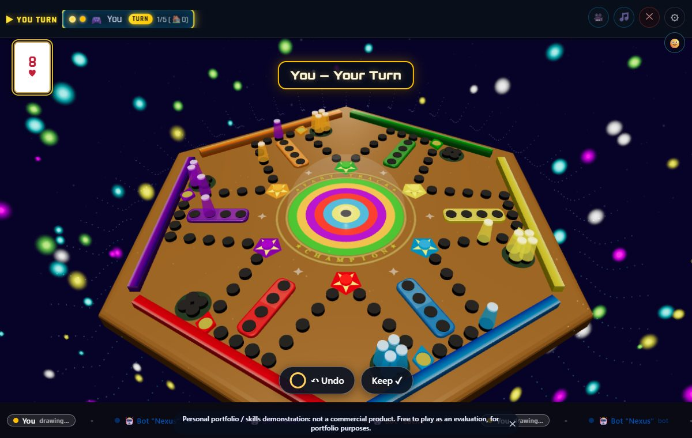
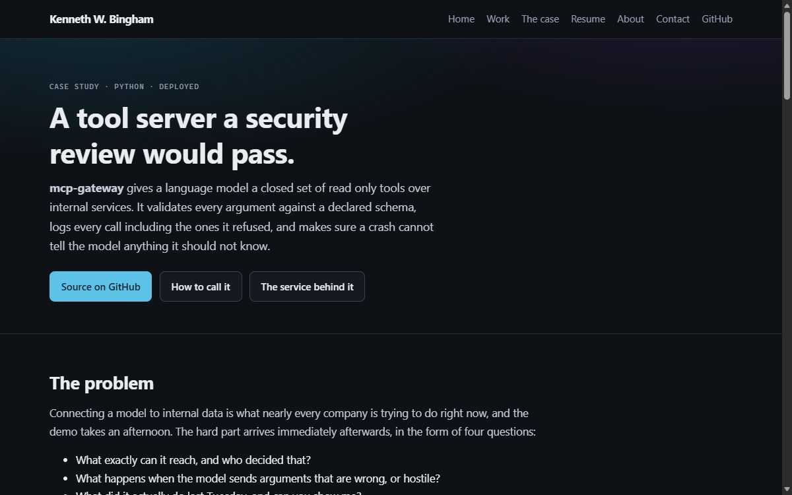
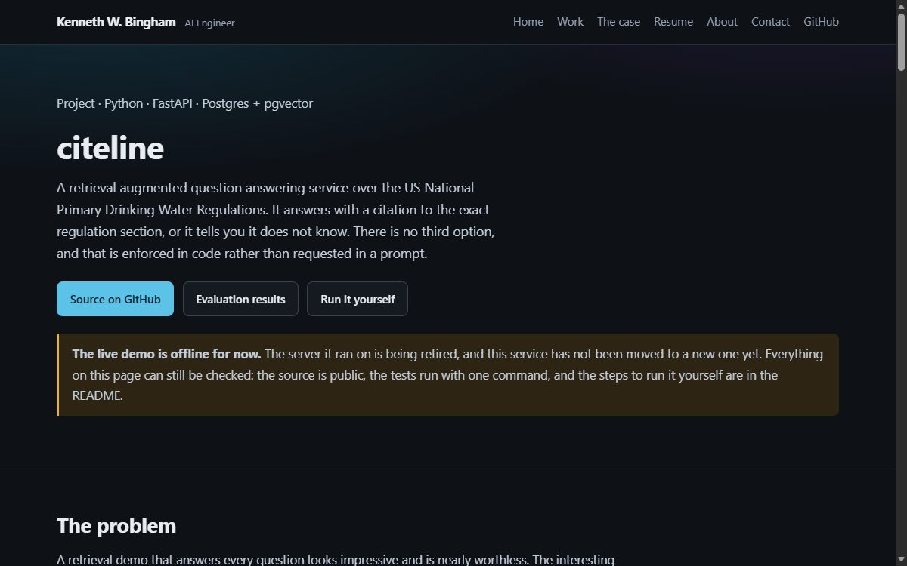
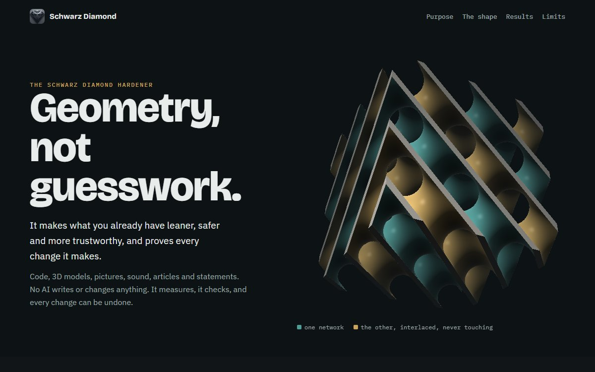
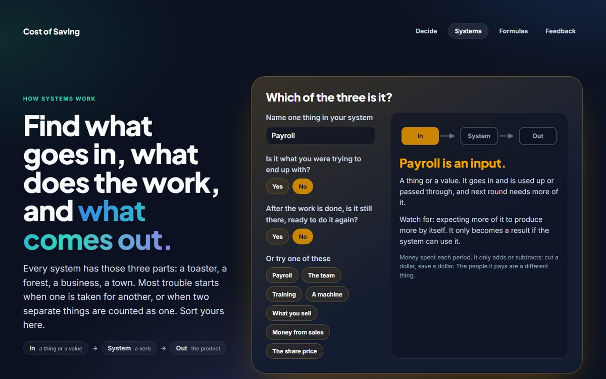

15+years building software, from startups' first prototype to systems under DoD change control
517automated checks on Cost of Saving, all passing, across 13 test suites
67messages of direction behind the 3D gallery in its first three days, most of them "not that, this"
117pages on Cost of Saving, with every link checked on every build
Work you can open right now
Each of these was conceived and directed by me and written by an AI under my rules: nothing is called done until it has been run, every sum has a test that tries to break it, and I am told plainly what was and was not checked.
Game · three.js · live and free to play
A whole 3D game, directed by me, written with AI
- The problem
- Can one person direct an AI through something large, with parts that must keep working together, and ship it finished and tested?
- What I built
- Chomp 3D: Wally's Cairns Adventure. Seven levels across real Far North Queensland, a story, points and leaderboards, on phones and computers. My design and decisions; the AI wrote the code under my rules.
- The proof
- 1,022 unit checks and 107 browser checks, the browser suite run against the live site too. Fifteen versioned beta releases with one-command rollback, changes made from tester feedback, and VR headset play.

Game · three.js · live and free to play
A board game whose turns had to be right
- The problem
- In online games, turns sometimes skipped or doubled. It looked like a network fault.
- What I found
- It was a question of who owns the turn, not the network. One player's game now decides every turn and tells the others, and bots at three difficulties play the board position.
- The proof
- A headless test runs two players' games side by side and reproduced the fault before the fix. The public version plays against bots, loads nothing from any other site, and is checked in a browser on every publish.

AI system · Model Context Protocol · Python
A tool server a security review would pass
- The problem
- Connecting a language model to internal data takes an afternoon. Answering the security review afterwards is the hard part.
- What I built
- An audited MCP server in Python and FastAPI: a closed list of read-only tools, every argument validated against a schema, every call logged including the ones it refused, and errors that cannot leak.
- The proof
- 29 tests with lint and type checks, all passing. One test raises an error containing a database password and proves it never reaches the model.

AI system · RAG · Postgres and pgvector
Answers with a citation, or says it does not know
- The problem
- A retrieval system that always answers is worse than useless in regulated work, because the confident wrong answer looks the same as the right one.
- What I built
- A question-answering service over US drinking water regulations (40 CFR Part 141). Hybrid search, a gate that declines when the text does not support an answer, and a rule enforced in code: a citation to a passage that was never retrieved is rejected. Runs on local models.
- The proof
- 31 unit tests, and an evaluation set of 28 cases, 8 of them deliberately out of scope to measure whether it stays quiet. 185 documents and 908 chunks indexed.

Product · no AI · runs on your own computer · in private development
Hardening files without AI: the Schwarz Diamond
- The problem
- Tools that check or clean files with AI can be confidently wrong, and usually send the files away. Many of those jobs need a measurement, not a prediction.
- What I built
- A local app with one engine and modules for code, 3D models, pictures, sound, text, news bias, questions over your own documents, security and budgets. It finds what is wasted, exposed, fragile or slanted, changes only what a check proves safe, and keeps a way back for every change.
- The proof
- On a finished game's 147 already-compressed models, 2.0 MB proven removable, each model redrawn from 6 angles with at most 0.31% of pixels moved. Code removals tested on copies of 3 projects, their test suites unchanged (31, 28 and 10 passing). Cleaned pictures and sound decode identical, pixel for pixel and sample for sample.

Product · decision tools
Cost of Saving
- The problem
- A saving and what it costs are recorded in different places, so nobody adds them up.
- What I built
- Free calculators that put the two side by side for purchases, jobs, repairs, business cuts and hiring steps. Every formula is published. Nothing typed leaves the browser.
- The proof
- 13 test suites and 517 checks, with sums worked by hand in the tests. 117 pages, 0 broken links, checked on every build.

Teaching tool · interactive
How Systems Work
- The problem
- Most costly decisions come from mistaking one part of a system for another, such as counting the people who do the work as only a cost.
- What I built
- A page where you sort your own system into what goes in, what does the work, and what comes out, then wire it wrongly and watch the result come apart.
- The proof
- The model behind it has 59 checks, including hand-worked cases and every combination of settings.

3D on the web · three.js
A gallery you walk through
- The problem
- A page of thumbnails does not feel like standing in front of a painting.
- What I built
- Rooms to walk through, every picture framed and lit, visitors and sound, and a cinema with an audience where the paintings move. Drawn entirely in code, with no 3D model files.
- The proof
- 59 works catalogued (38 paintings, 21 digital), with a build that refuses duplicate pictures. Shaped by 67 messages of direction in its first three days, and a page that says who did what.
Teaching · video series
Demystifying AI
- The problem
- Most people either fear AI or expect too much of it, and neither helps them use it well.
- What I made
- A series of standalone videos, from "What is AI?" to advanced topics, each one topic in depth with concrete examples, including how to spot and reduce made-up answers.
- Why it matters
- Explaining AI plainly to non-technical people, without overselling it, is half of getting a team to use it well.
Contract · Handshake AI · 2026
Measuring whether a model can be trusted
- The problem
- "It seems to work" is not evidence that a language model is reliable.
- What I built
- Adversarial benchmarks and evaluation harnesses that score tool use and step-by-step behavior against a written rubric, sampled many times over.
- The result
- Recommendations to scale, iterate or stop, each backed by measurements instead of impressions.
Humana · healthcare · 2022 to 2024
Claims pipelines under HIPAA
- The problem
- High volumes of healthcare claims, handled by hand, under strict privacy rules.
- What I built
- .NET 6 services and HL7 and FHIR data pipelines, with Python automation that removed manual processing cycles.
- How
- Working directly with clinical, operations and data teams to agree the rules before writing the code.
U.S. Air Force, Hill AFB · defense
Modernizing systems that cannot fail
- The problem
- Aging hazardous-waste and asset-tracking systems, in an environment where every change is controlled.
- What I built
- Replacements in Java, Spring Boot, .NET and SQL Server, prototyped with the people who use them, with automated harnesses that prove the old behavior still holds.
- Context
- Delivered under DoD change control while holding a Secret clearance.
Five rules the AI works under
An AI will happily produce something that looks finished. These are the standing rules I give it so that what comes back is actually finished, and so I can tell the difference.
Direction, not commands
I say what it is for and who will use it. A command gets carried out the same way whatever the situation. Direction makes the AI use judgment, and lets me see where its judgment is off.
Nothing is true until it runs
No "this should work". It runs the code, shows me the output, and tells me separately what it ran and what is still mine to run.
Tests that try to break it
Every sum gets a case worked by hand, the edges get tried, and a tipping point is checked by feeding it back in.
Say what kind of claim it is
Measured, established, an interpretation, or not claimed. A confident guess is a defect, and the AI is told to stop at the edge of what it knows.
No yes-man
If I am wrong, it says so and shows why. Agreement without checking is how projects go in circles.
What I build with
The AI is a tool I am fluent in. The engineering underneath is more than fifteen years old.
Back end
- Java
- Spring Boot
- Hibernate and JPA
- REST services, datasource to controller
- .NET 6 / C#
- Razor Pages
- Python
Front end
- Angular
- TypeScript
- JavaScript
- Bootstrap
Data and DevOps
- SQL Server
- Schema design and query tuning
- Azure DevOps
- TFS and Git
- CI/CD
AI-assisted programming
- Directing Claude Code in VS Code
- Spec, review, test
- LLM evaluation
- Adversarial benchmarks
- Hallucination mitigation
- Agents connected to tools through MCP
- Private multi-model AI with Ollama
- Standing directives and memory
Servers and Linux
- Ubuntu server admin
- nginx virtual hosts
- Let's Encrypt
- PM2 and systemd
- Git push-to-deploy
Directed with AI, in my projects
- three.js and WebXR
- Node.js
- Cloudflare Workers and KV
- PostgreSQL and pgvector (RAG)
- MCP server in Python and FastAPI
- Browser test automation
Regulated work
- HIPAA and PHI handling
- HL7 / FHIR
- DoD change control
- USAF Secret clearance, previously held
Where I have done it
The through line is places where somebody eventually audits the trail.
AI Engineer, evaluation and prototypingHandshake AI · contract · 2026 to now
- Adversarial benchmarks and agent workflows that test reliability, tool use and step-by-step safety.
- Evaluation harnesses that encode a rubric and sample repeatedly, so failure is measured and not guessed.
Software Developer, contractDTSI and Software Implementers · U.S. Air Force, Hill AFB
- Modernized mission-critical systems in Java, Spring Boot, .NET and SQL Server under DoD change control.
- Built test harnesses that validate legacy behavior before each deployment.
Software Developer, claims and data automationHumana · 2022 to 2024
- .NET 6 microservices and HL7 and FHIR pipelines for high-volume claims under HIPAA.
- Python ETL and Linux automation that removed manual processing.
Enterprise Software ConsultantSoftware Technology Group · The Church of Jesus Christ of Latter-day Saints
- Prototyped a worldwide missionary portal for executive leadership before the full build.
- Delivered features in Java, Spring, AngularJS, Oracle and MarkLogic, and handed them to the enterprise team with architecture notes.
The AI writes the code. I am responsible for it.
The person stays in charge. Software can recommend. A named human decides. I build that into the tools and I work that way with the AI.
A tool should leave its user more capable. The calculators above ask for your own numbers and show their working, so you can disagree with them. That is on purpose.
Credit is stated exactly. I conceive, direct and decide. The AI writes and tests. It does not originate the ideas, and I do not pretend I typed every line.
If it cannot be checked, it is not finished.